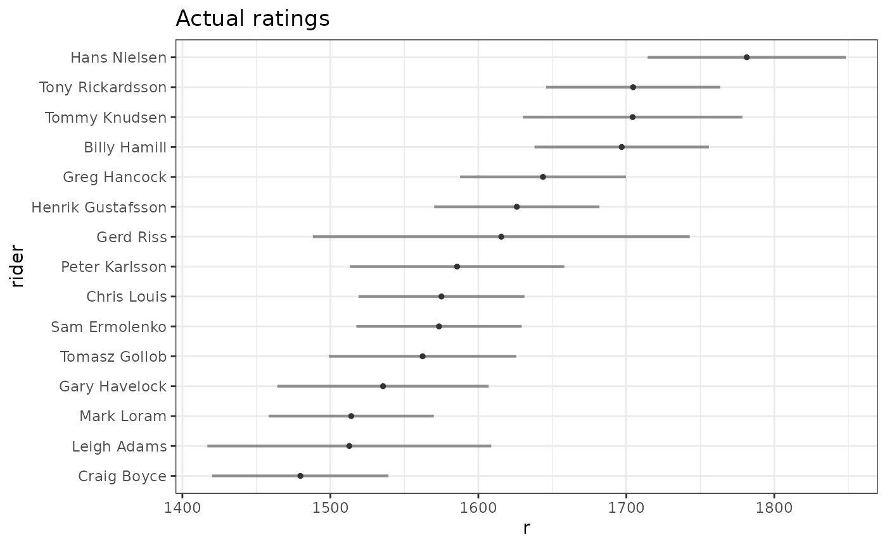
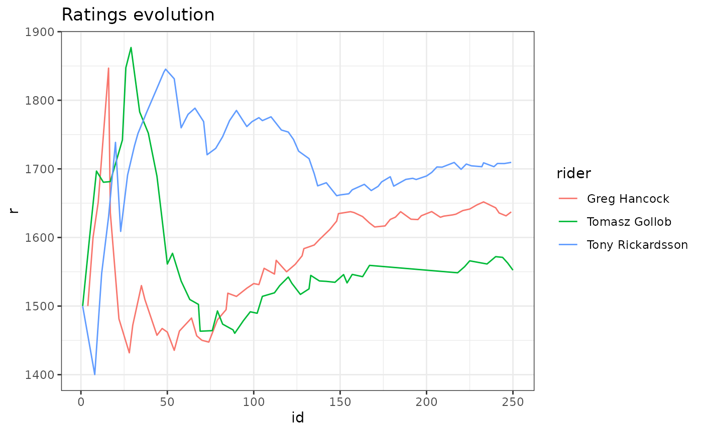

vignettes/sport_in_r.Rmd
sport_in_r.RmdName sport is an abbreviation for Sequential Pairwise Online Rating Techniques. Package contains functions calculating ratings for two-player or multi-player matchups. Methods included in package are able to estimate ratings (players strengths) and their evolution in time, also able to predict output of challenge. Algorithms are based on Bayesian Approximation Method, and they don’t involve any matrix inversions nor likelihood estimation. sport incorporates glicko algorithm, glicko2, bayesian Bradley-Terry and dynamic logistic regression. Parameters are updated sequentially, and computation doesn’t require any additional RAM to make estimation feasible. Additionally, package is written in c++ what makes computations even faster.
Before start, it’s recommended to read theoretical foundations of algorithms in other sport vignette “The theory of the online update algorithms”.
Package can be installed from CRAN or from github.
Package contains actual data from Speedway Grand-Prix. There are two data.frames:
gpheats - results SGP heats. Column rank is a numeric version of column position - rider position in race.
gpsquads - summarized results of the events, with sum of point and final position.
## 'data.frame': 1002 obs. of 11 variables:
## $ id :List of 1002
## ..$ : num 1
## ..$ : num 1
## ..$ : num 1
## ..$ : num 1
## ..$ : num 2
## ..$ : num 2
## ..$ : num 2
## ..$ : num 2
## ..$ : num 3
## ..$ : num 3
## ..$ : num 3
## ..$ : num 3
## ..$ : num 4
## ..$ : num 4
## ..$ : num 4
## ..$ : num 4
## ..$ : num 5
## ..$ : num 5
## ..$ : num 5
## ..$ : num 5
## ..$ : num 6
## ..$ : num 6
## ..$ : num 6
## ..$ : num 6
## ..$ : num 7
## ..$ : num 7
## ..$ : num 7
## ..$ : num 7
## ..$ : num 8
## ..$ : num 8
## ..$ : num 8
## ..$ : num 8
## ..$ : num 9
## ..$ : num 9
## ..$ : num 9
## ..$ : num 10
## ..$ : num 10
## ..$ : num 10
## ..$ : num 10
## ..$ : num 11
## ..$ : num 11
## ..$ : num 11
## ..$ : num 11
## ..$ : num 12
## ..$ : num 12
## ..$ : num 12
## ..$ : num 12
## ..$ : num 13
## ..$ : num 13
## ..$ : num 13
## ..$ : num 13
## ..$ : num 14
## ..$ : num 14
## ..$ : num 14
## ..$ : num 14
## ..$ : num 15
## ..$ : num 15
## ..$ : num 15
## ..$ : num 15
## ..$ : num 16
## ..$ : num 16
## ..$ : num 16
## ..$ : num 16
## ..$ : num 17
## ..$ : num 17
## ..$ : num 17
## ..$ : num 17
## ..$ : num 18
## ..$ : num 18
## ..$ : num 18
## ..$ : num 18
## ..$ : num 19
## ..$ : num 19
## ..$ : num 19
## ..$ : num 19
## ..$ : num 20
## ..$ : num 20
## ..$ : num 20
## ..$ : num 20
## ..$ : num 21
## ..$ : num 21
## ..$ : num 21
## ..$ : num 21
## ..$ : num 22
## ..$ : num 22
## ..$ : num 22
## ..$ : num 22
## ..$ : num 23
## ..$ : num 23
## ..$ : num 23
## ..$ : num 23
## ..$ : num 24
## ..$ : num 24
## ..$ : num 24
## ..$ : num 24
## ..$ : num 25
## ..$ : num 25
## ..$ : num 25
## ..$ : num 25
## .. [list output truncated]
## $ season : int 1995 1995 1995 1995 1995 1995 1995 1995 1995 1995 ...
## $ date : POSIXct, format: "1995-05-20 17:00:00" "1995-05-20 17:00:00" ...
## $ round : int 1 1 1 1 1 1 1 1 1 1 ...
## $ name : chr "Speedway Grand Prix of Poland" "Speedway Grand Prix of Poland" "Speedway Grand Prix of Poland" "Speedway Grand Prix of Poland" ...
## $ heat : int 1 1 1 1 2 2 2 2 3 3 ...
## $ field : int 1 2 3 4 1 2 3 4 1 2 ...
## $ rider : chr "Tomasz GOLLOB" "Gary HAVELOCK" "Chris LOUIS" "Tony RICKARDSSON" ...
## $ points : int 2 0 3 1 3 0 1 2 0 2 ...
## $ position: chr "2" "4" "1" "3" ...
## $ rank : num 2 4 1 3 1 4 3 2 4 2 ...Data used in sport package must be in so called long format. Typically data.frame contains at least id, name of the player and rank, with one row for one player within specific match. Package allows for any number of players within event and allows ties also.
In all methods, output variable needs to be expressed as a rank/position in event. Don’t mix up rank output with typical 1-win, 0-lost. In sport package output for two player game should be coded as 1=winner 2=looser. Below example of two matches with 4 players each.
## id rider rank
## 1 1 Tomasz GOLLOB 2
## 2 1 Gary HAVELOCK 4
## 3 1 Chris LOUIS 1
## 4 1 Tony RICKARDSSON 3
## 5 2 Sam ERMOLENKO 1
## 6 2 Jan STAECHMANN 4
## 7 2 Tommy KNUDSEN 3
## 8 2 Henrik GUSTAFSSON 2To compute ratings using each algorithms one has to specify formula. - RHS of the formula have to be specified with player(player) term or player(player | team) when players competes in team match. player(...) is a term function which helps identify column with player names and/or team names. - LHS of the formula should contain rank term which points to column where results (ranks) are stored and id (optional). RHS should rather be specified by rank | id to split matches - if id is missing all data will be computed under same event id.
glicko <- glicko_run(formula = rank | id ~ player(rider), data = data)
glicko2 <- glicko2_run(formula = rank | id ~ player(rider), data = data)
bbt <- bbt_run(formula = rank | id ~ player(rider), data = data)
dbl <- dbl_run(formula = rank | id ~ player(rider), data = data)
print(glicko)##
## Call: rank | id ~ player(rider)
##
## Number of unique pairs: 1500
##
## Accuracy of the model: 0.63
##
## True probabilities and Accuracy in predicted intervals:
## Interval Model probability True probability Accuracy n
## 1: [0,0.1] 0.066 0.196 0.804 92
## 2: (0.1,0.2] 0.152 0.305 0.695 243
## 3: (0.2,0.3] 0.251 0.294 0.706 299
## 4: (0.3,0.4] 0.350 0.424 0.575 416
## 5: (0.4,0.5] 0.454 0.448 0.549 481
## 6: (0.5,0.6] 0.553 0.560 0.556 419
## 7: (0.6,0.7] 0.650 0.576 0.575 416
## 8: (0.7,0.8] 0.749 0.706 0.706 299
## 9: (0.8,0.9] 0.848 0.695 0.695 243
## 10: (0.9,1] 0.934 0.804 0.804 92Objects returned by <method>_run are of class rating and have their own print and summary which provides simple overview. print.sport shows
condensed informations about model performance like accuracy and consistency of model predictions with observed probabilities. More precise overview are
given by summary by showing ratings, ratings deviations and comparing model win probabilities with observed.
## $formula
## rank | id ~ player(rider)
##
## $method
## [1] "dbl"
##
## $`Overall Accuracy`
## [1] 0.635
##
## $`Number of pairs`
## [1] 3000
##
## $r
## rider r rd
## 1: rider=Tomasz GOLLOB 0.523 0.073
## 2: rider=Gary HAVELOCK 0.865 0.116
## 3: rider=Chris LOUIS 0.355 0.048
## 4: rider=Tony RICKARDSSON 1.167 0.048
## 5: rider=Sam ERMOLENKO 0.243 0.049
## 6: rider=Jan STAECHMANN -1.769 0.292
## 7: rider=Tommy KNUDSEN 0.855 0.122
## 8: rider=Henrik GUSTAFSSON 0.957 0.048
## 9: rider=Mikael KARLSSON -1.464 0.292
## 10: rider=Hans NIELSEN 1.522 0.053
## 11: rider=Andy SMITH -0.946 0.068
## 12: rider=Mark LORAM -0.082 0.048
## 13: rider=Greg HANCOCK 1.079 0.049
## 14: rider=Marvyn COX -1.011 0.054
## 15: rider=Dariusz ŚLEDŹ 0.103 0.774
## 16: rider=Craig BOYCE -0.330 0.059
## 17: rider=Billy HAMILL 1.235 0.054
## 18: rider=Peter KARLSSON 0.600 0.175
## 19: rider=Franz LEITNER -0.597 0.735
## 20: rider=Gerd RISS 0.002 0.540
## 21: rider=Josh LARSEN -2.481 0.735
## 22: rider=Lars GUNNESTAD -0.480 0.735
## 23: rider=Jason CRUMP -0.167 0.264
## 24: rider=Leigh ADAMS -0.333 0.358
## 25: rider=Joe SCREEN -0.155 0.264
## 26: rider=Stefano ALFONSO -1.733 0.735
## rider r rdTo visualize top n ratings with their 95% confidence interval one can use dedicated plot.rating function. For dbl method top coefficients are presented which doesn’t have to be player specific (ratings). It’s also possible to examine ratings evolution in time, by specifying players argument.


Except dedicated print,summary and plot there is possibility to extract more detailed information for analyses. rating object contains following elements:
## [1] "final_r" "final_rd" "r" "pairs"rating$final_r and rating$final_rd contains the last estimate of the ratings and ratings deviations. For glicko2 there is also rating$final_sigma.
r contains data.table with prior ratings estimations from first event to the last. Number of rows in r equals number of rows in input data.
pairs pairwise combinations of players in analyzed events with prior probability and result of a challenge.
## id rider r rd
## 1: 250 Peter KARLSSON 1597.472 37.17764
## 2: 250 Tomasz GOLLOB 1552.346 32.34887
## 3: 250 Billy HAMILL 1697.257 30.04788
## 4: 251 Craig BOYCE 1477.183 30.23765
## 5: 251 Hans NIELSEN 1778.792 34.01788
## 6: 251 Chris LOUIS 1579.143 28.47306## id rider opponent Y P
## 1: 251 Craig BOYCE Hans NIELSEN 0 0.1520817
## 2: 251 Craig BOYCE Chris LOUIS 1 0.3584955
## 3: 251 Hans NIELSEN Craig BOYCE 1 0.8479183
## 4: 251 Hans NIELSEN Chris LOUIS 1 0.7573203
## 5: 251 Chris LOUIS Craig BOYCE 0 0.6415045
## 6: 251 Chris LOUIS Hans NIELSEN 0 0.2426797Examples presented in package overview might be sufficient in most cases, but sometimes it is necessary to adjust algorithms to fit data better. One characteristic of the online update algorithms is that variance of the parameters drops quickly to zero. Especially, when the number of events for the player is big ($n_i>100 $), after hundreds iterations rating parameters are very difficult to change, and output probabilities use to be extreme. To avoid these mistakes some additional controls should be applied, which is explained in this section with easy to learn examples.
In all methods formula must contain rank | id ~ player(player) elements, to correctly specify the model.
rank denotes column with output (order).
id denotes event id, within which update is computed.
player(...) function helps to identify column in which names of the players are stored. player(...) can be specified in two ways:
player(player) if results of the event are observed per player.
player(player | team) when players competes within teams, and results are observed per team. This option is not available in dbl_run which requires only formula for player matchups.
other variables - available only in dbl_run, which allows to specify other factors in model.
r and rd
Main functionality which is common between all algorithms is to specify prior r and rd. Both parameters can be set by creating named vectors. Let’s suppose we have 4 players c("A","B","C","D") competing in an event, and we have players prior r and rd estimates. It’s important to have r and rd names corresponding with levels of name variable. One can run algorithm, to obtain new estimates.
We can also run models re-using previously estimated parameters from model$final_r and model$final_rd in the future when new data appear.
glicko_run(
formula = rank | id ~ player(rider),
data = gpheats[17:20, ],
r = model$final_r,
rd = model$final_rd
)$final_r## Tomasz GOLLOB Gary HAVELOCK Chris LOUIS Tony RICKARDSSON
## 1696.809 1200.487 1799.513 1400.162
## Sam ERMOLENKO Jan STAECHMANN Tommy KNUDSEN Henrik GUSTAFSSON
## 1940.042 1200.487 1400.162 1599.838
## Mikael KARLSSON Hans NIELSEN Andy SMITH Mark LORAM
## 1200.487 1599.838 1455.702 1799.513
## Greg HANCOCK Marvyn COX Dariusz ŚLEDŹ Craig BOYCE
## 1599.838 1200.487 1400.162 1508.129weight
All algorithms have a weight argument which increases or decreases update size. Higher weight increasing impact of corresponding event. Effect of the weight on update size can be expressed directly by following formula - \(\small R_i^{'} \leftarrow R_i \pm \omega_i * \Omega_i\). To specify weight \(\omega_i\) one needs to create additional column in input data, and pass the name of the column to weight argument. For example weight could depend on importance of competition. In speedway Grand-Prix last three heats determine event winner, thus they weight more.
##
## Attaching package: 'dplyr'## The following objects are masked from 'package:stats':
##
## filter, lag## The following objects are masked from 'package:base':
##
## intersect, setdiff, setequal, unionkappa
In situation when player plays games very frequently, rd can quickly decrease to zero, making further changes limited. Setting kappa (single value) avoids rating deviation decrease to be lower than specified fraction of rd. In other words final rd can’t be lower than initial RD times kappa
\[\small RD' \geq RD * kappa\]
bbt1 <- bbt_run(formula = rank | id ~ player(rider),
data = data,
kappa = 0.99) # RD decreases at most 1%
bbt2 <- bbt_run(formula = rank | id ~ player(rider),
data = data,
kappa = 0.8) # RD decreases at most 20%
all(bbt1$final_rd >= bbt2$final_rd)## [1] TRUElambda
In some cases player ratings tend to be more uncertain. If scientist have prior knowledge about higher risk of event or uncertainty of specific player performance, then one might create another column with relevant values and pass the column name to lambda argument.
In above examples players competes as individuals, and each is ranked at the finish line. There are sports where players, competes in teams, and results are reported per team. sport is able to compute player ratings, and requires only changing formula from player(player) to player(player | team). data.frame should always be a long format, with one player for each row. Ratings are updated according to their contribution in team efforts. share argument can be added optionally if scientist have some knowledge about players contribution in match (eg. minutes spent on the field from all possible minutes).
glicko2 <- glicko2_run(
data = data.frame(
id = c(1, 1, 1, 1),
team = c("A", "A", "B", "B"),
player = c("a", "b", "c", "d"),
rank_team = c(1, 1, 2, 2),
share = c(0.4, 0.6, 0.5, 0.5)
),
formula = rank_team | id ~ player(player | team),
share = "share"
)
glicko2$final_r## a b c d
## 1583.660 1625.489 1394.845 1394.845Output object contains the same elements as normal, with one difference - pairs contains probability and output per team, and r contains prior ratings per individuals.
## id team opponent Y P
## 1: 1 A B 1 0.5
## 2: 1 B A 0 0.5## id team player r rd sigma
## 1: 1 A a 1500 350 0.05
## 2: 1 A b 1500 350 0.05
## 3: 1 B c 1500 350 0.05
## 4: 1 B d 1500 350 0.05